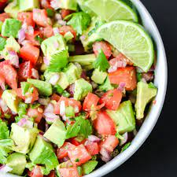

Pico de Gallo Recipe
Return to Homepage

Description
Pico de gallo is a type of salsa, but it contains less liquid than traditional salsa, it
uses only fresh ingredients (some salsas are cooked on the stove), and pico de gallo is
never blended (salsas can vary from pureed to gently mashed, but pico de gallo is always
made with diced and chopped ingredients)
Ingredients
- 6 roma (plum) tomatoes, diced
- ½ red onion, minced
- 3 tablespoons chopped fresh cilantro
- ½ jalapeño pepper, seeded and minced
- ½ lime, juiced
- 1 clove garlic, minced
- 1 pinch garlic powder
- 1 pinch ground cumin, or to taste
- salt and ground black pepper to taste
Steps
-
Gather all ingredients.
-
Stir tomatoes, onion, cilantro, jalapeño pepper, lime juice, garlic, garlic powder, cumin,
salt, and pepper together in a bowl.
-
Enjoy!